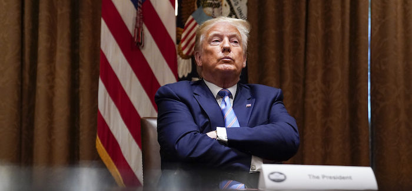

2020-09-02 08:00

After decades of shielding police from prosecution for the murders of Black and Brown people, and four centuries of systemic racism, many Americans have had enough of police impunity.
But state violence is just one symptom of a society founded on white supremacy. The upwelling of protests demanding police reform is not simply about the police. After four years of unprecedented presidential criminality and corruption, the protests are as much about the Trump administration’s impunity as they are about his friends in law enforcement.
Since the George Floyd murder there have been over 100 days of protests. Despite the rare occasions of rioting, almost all have been peaceful. To White America, however, such unrest is a frightening reminder that white supremacy’s days are numbered. Race, like the Coronavirus, is on everyone’s mind.
But having failed to save the lives of what are projected to top 400,000 COVID-19 victims by year’s end, Trump is (again) running on race and avoiding the subject of his incompetence in dealing with a national emergency.
In June Trump announced “I am your president of law and order.” Forget the pandemic, Trump was saying. What White America should really fear is accountability for both his administration and America’s unfettered Police State. Accordingly, “gun couple” Mark and Patrica McCloskey were invited to address the July GOP convention after they aimed weapons at Black Lives Matter protestors in Saint Louis, Missouri. Other GOP speakers, including Rudi Guilani and Michael McHale, president of the National Association of Police Organizations, painted an apocalyptic image of America under Biden and Harris. Mike Pence comforted the white base: “We will have law and order on the streets of this country.”
But if that appeal to authoritarianism and racism were not sufficiently obvious, after the convention Trump warned supporters that holding police accountable would threaten white suburbia. Having traded in an inaudible dog whistle for a racist bullhorn, Trump went for broke by issuing a September 4th memo banning anti-racism and anti-bias training as “un-American.”
So, if anti-racism is anti-American, what then is “American?”
Maya Angelou had it right when she said, “When someone shows you who they are, believe them the first time.” In January 2016 Trump made the now-famous statement: “I could stand in the middle of 5th Avenue and shoot somebody and wouldn’t lose any voters, ok? It’s, like, incredible.”
And it was incredible. The Killer of Fifth Avenue was letting everyone know that laws and norms — which everyone else is obliged to follow — don’t apply to him or his base.
No one should have been surprised then by the epidemic of corruption and criminality that followed.
Donald Trump is “a liar, a fraud, a bully, a racist, a predator, a con man.”
These are the words of Trump’s own lawyer, Michael Cohen.
“All he wants to do is appeal to his base. […] He has no principles. None. None. And his base, I mean my God, if you were a religious person, you want to help people. Not do this. […] His goddamned tweet and lying, oh my God. […] The change of stories. The lack of preparation. The lying. Holy shit. […] It’s the phoniness of it all. It’s the phoniness and this cruelty. Donald is cruel.”
Those were the words of Trump’s own sister, Maryanne Trump Barry.
The assortment of con men and sociopaths who committed crimes in Trump’s behalf is astounding: Cohen, who pled guilty to tax evasion, lying to a bank, campaign finance violations, and lying to Congress; former Trump national security advisor Michael Flynn, who pled guilty to lying to the FBI; ex Trump campaign aide Rick Gates, convicted of “conspiracy against the U.S.” and lying to the FBI; former Trump campaign chairman Paul Manafort, conspiracy against the U.S., tax evasion, bank fraud, hiding bank accounts, and obstruction of justice; former Trump campaign advisor George Papadapolous, lying to the FBI; former Trump campaign advisor Roger Stone, lying to Congress, obstruction of justice, and witness tampering; and most recently, Steve Bannon, Trump campaign manager and White House advisor, arrested and charged with defrauding investors in a border wall crowdfunding scheme.
Even if you wave away the Mueller investigation or ignore the astounding collection of criminals Trump has hired and surrounded himself with, then look at his presidential commutations and pardons — beginning with the murderers and war criminals.
In May 2019 Trump pardoned war criminal Michael Behenna, who had been convicted of committing murder and assault in Iraq. In November 2019 Trump pardoned Mathew L. Golsteyn, convicted of another war crime, a murder in Afghanistan. The same day Trump also pardoned Clint Lorance, convicted of killing two Afghanis and ordering his unit to shoot civilians. And, to highlight that impunity for murder was the basis for his pardons, Trump just slapped economic sanctions on International Criminal Court officials investigating American war crimes.
If war crimes deserve impunity, then why not civil rights abuses too?
Trump’s first Presidential pardon in August 2017 was for Joe Arpaio, convicted not of the many civil rights abuses and racial profiling he committed over decades as Maricopa County Sheriff but ultimately for contempt of court. By pardoning Arpaio Trump was signaling to a white supremacist base that laws don’t apply to them. Senator John McCain noted that Trump’s pardon “undermines his claim for the respect of rule of law “
Trump, who was photographed fondling an American flag at a CPAC Convention, and whose faux Christianity seems equally dubious, may play an uber-patriotic Commander-in-Chief on TV, but the evidence suggests he has stronger attachments to cronies who actually undermine national security.
In April 2018 Trump pardoned Lewis “Scooter” Libby, convicted for “outing” CIA agent Valerie Plame for political purposes, and whose sentence was commuted by George W. Bush. Most recently, Trump pardoned Libby for convictions on obstruction of justice and perjury. Likewise, Trump commuted the sentence of Roger Stone, who was a Trump operative coordinating 2016 Russian election interference and was convicted of lying to Congress, witness tampering, and obstruction of justice.
Trump may scream “law and order” at the sight of unruly people protesting police murders, but Trump’s actual support for sedition by far-right white people casts the whole “law and order” shtik into question.
In 2012 Dwight Hammond and his son Steven were convicted of arson on federal property. Their sentences were stiffened in 2015, which led to the 2016 occupation of the Malheur National Wildlife Refuge in Oregon by far-right extremists, including milias and sovereign citizen groups. Trump pardoned the Hammonds in July 2018.
Trump claims that GOP voter suppression and the rejection of absentee ballots is done to protect the sanctity of the voting booth. But it’s clear he has no respect for election integrity.
In May 2108, Trump pardoned Dinesh D’Souza, a Fox News crony, who was convicted of making illegal campaign contributions to a Republican Senate campaign. In May 2019 Trump pardoned Pat Nolan, another Republican, who was convicted of soliciting illegal campaign contributions. And in February 2020 Trump pardoned Rod Blagojevich, who was convicted of wire fraud, conspiracy, attempted extortion, perjury — all related to his offer to literally sell the gubernatorial Senate seat vacated by Barack Obama.
And despite Trump’s staged tour of the site of arson and looting in Kenosha, he doesn’t oppose corporate looting — or individual acts of looting committed by his cronies.
In December 2017 Trump commuted the sentence of Sholom Rubashkin, who ran America’s largest kosher meat-processing plant in Iowa. Rubashkin had been charged with immigration violations, sexual harrassment, and child exploitation, but it was the 86 counts of bank fraud that did him in. Son-in-law Jared Kushner pushed Trump for Rubashkin’s commutation. Another of Trump’s cronies, Conrad Black, former media mogul and author of a glowing biography of Donald Trump, was pardoned (only after the book appeared, of course) in May 2019 for mail fraud and obstruction of justice related to embezzling funds from the newspapers he owned. Edward DeBartolo, Jr., was pardoned in February 202 after being convicted of extortion and a quid-pro-quo involving a casino license. Michael Milken, whose name is virtually synonymous with financial corruption, was pardoned the same day for securities, mail, and tax fraud. To these names add Paul Pogue (tax fraud), disgraced cop Bernard Kerik (tax fraud), Ted Suhl (bribery), and Judith Negron (health care fraud and money laundering).
There are two Americas. One is the idealized America taught in Social Studies and naturalization classes. In this version, government operates like a well-oiled machine, humming along nicely thanks to fail-safe checks and balances. In this America everyone is equal under the law. This fictional America has never really existed. But there’s no reason this “more perfect union” should and could not exist.
But in the twisted kleptocratic oligarchy that does exist, big cats prey upon smaller animals. The only real law is the Law of the Jungle. Power and privilege, and maximizing that power and privilege, strangle democracy. Checks and balances only get in the way. Laws are insults and inconveniences to white men in power. And their power is only sustained by impunity for those who wield power in their name.
We can thank Donald Trump for making it undeniably clear what type of America we really live in — a nation where the President has completely corrupted the legislature, the judiciary, and his own executive office. Where personal loyalty subverts Constitutional accountability. Where presidential crimes go unpunished and where the President’s cronies and bag men literally receive “Get out of Jail” cards. A nation on the brink of fascism, if it hasn’t already arrived.
The 2020 election boils down to a simple choice between the aspirational America most of us want — an imperfect, loud and messy democracy with accountability for public servants — or a police state in bed with a kleptocracy.
This is the simplest and most stark choice any American voter will ever have to make.